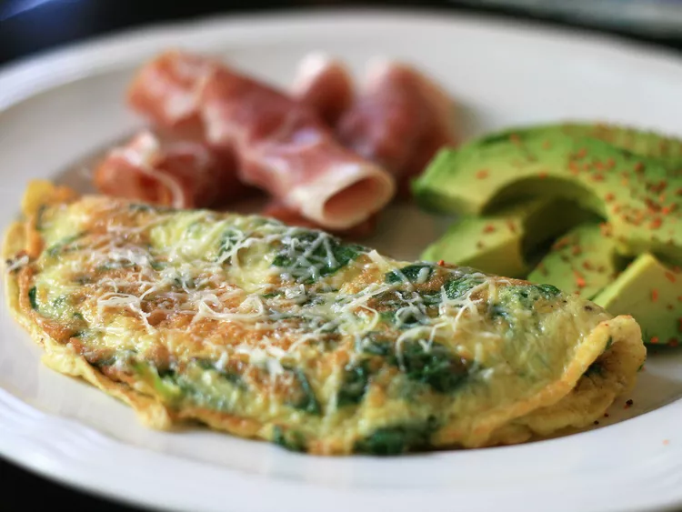

Baby Spinach Omlet

Enjoy this baby spinach omelet with tender baby greens, Parmesan cheese,
and a little nutmeg cooked together for the perfect start to the day.
- Servings: 1
- Total Time: 15 minutes
- Protein per Serving: 16g
Ingredients
- 2 eggs
- 1 cup torn baby spinach leaves
- 1 ½ tablespoons grated Parmesan cheese
- ¼ teaspoon onion powder
- ⅛ teaspoon ground nutmeg
- salt and pepper to taste
Steps
-
Beat eggs in a bowl, and stir in baby spinach and Parmesan cheese.
Season with onion powder, nutmeg, salt, and pepper.
-
Spray a small skillet with cooking spray and place over medium heat.
Once warm, add in the egg mixture and cook until partially set,
about 3 minutes.
Flip with a spatula, and continue cooking, 2 to 3 minutes.
-
Reduce heat to low and continue cooking, 2 to 3 minutes, or until omelet reaches desired doneness.